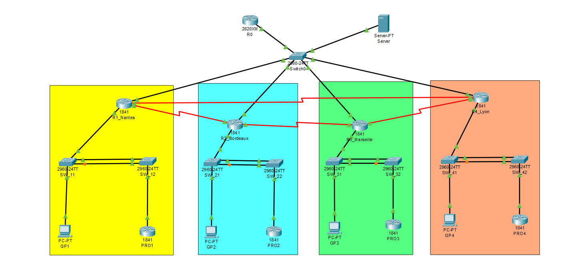
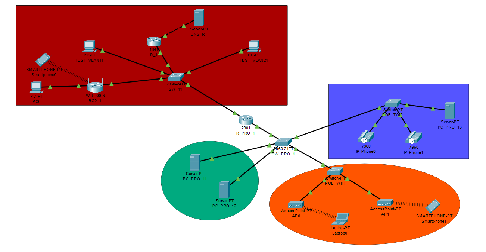

Concevoir un réseau multi-sites intégrant des objets connectés - SAÉ3.IOM.03
L'objectif de cette étude de cas était de simuler le déploiement complet d'un opérateur télécom fictif nommé "Blue". Pour être clair et progressif, le projet a été divisé en deux grandes phases : l'infrastructure nationale (le coeur de réseau) et l'infrastructure locale (chez les clients).
Nous avons d'abord interconnecté 4 grandes villes (Nantes, Bordeaux, Marseille, Lyon) en utilisant un routage dynamique OSPF. L'enjeu était de créer une architecture robuste et tolérante aux pannes, capable de transporter les données des clients Grand Public et Professionnels de manière isolée grâce à la technologie IP/MPLS et des VPN de niveau 2.
Ensuite, nous avons plongé dans le réseau local d'un client professionnel type. Il a fallu configurer le routeur d'entreprise et segmenter le trafic réseau avec des VLANs : une zone démilitarisée (DMZ) pour sécuriser les serveurs visibles de l'extérieur (Web, DNS, Email), un LAN classique pour les employés, un réseau Wi-Fi avec plusieurs SSID, et un réseau dédié à la téléphonie IP (ToIP).

